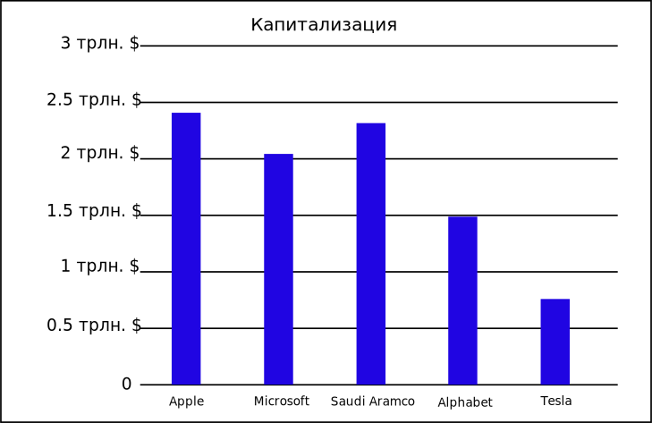
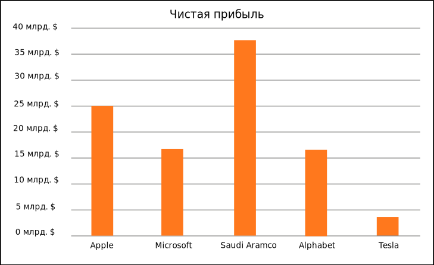

<section class="rating">
    <div class="container">
        <div class="rating__about">
            <p class="rating__text"><span>Рыночная капитализация</span> — стоимость объекта, рассчитанная на основе текущей рыночной цены. Этот финансовый показатель используют для оценки совокупной стоимости рыночных инструментов, субъектов и рынков.</p>
            <p class="rating__text"><span>Чистая прибыль</span> — часть балансовой прибыли предприятия, остающаяся в его распоряжении после уплаты налогов, сборов, отчислений и других обязательных платежей в бюджет.</p>
        </div>
        <div class="rating__inner">
            <h1 class="rating__title">Рейтинг компаний</h1>
            <div class="rating__menu">
                <a class="rating__categories" href="#diagram-1">Капитализация</a>
                <a class="rating__categories" href="#diagram-2">Чистая прибыль</a>
            </div>
            <div class="rating__content">
                <div id="diagram-1" class="rating__diagram">
                    
                </div>
                <div id="diagram-2" class="rating__diagram">
                    
                </div>
            </div>


        </div>
    </div>
</section>
